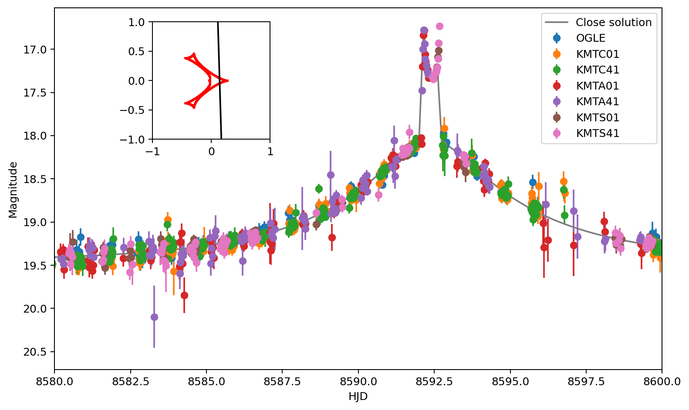
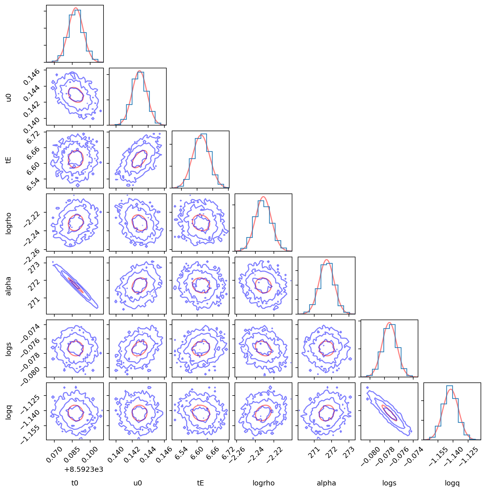
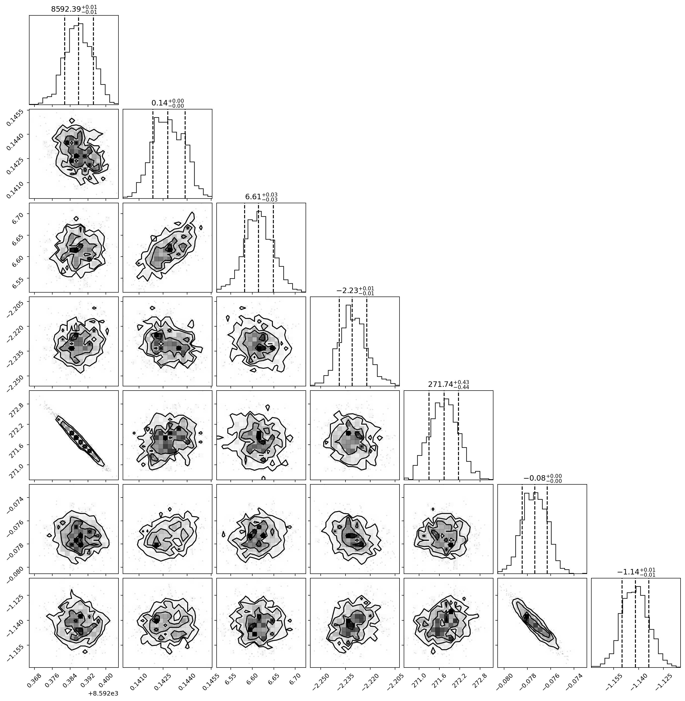

Modeling KB-19-0371 with microlux¤
This notebook demonstrates a binary microlensing analysis for the real event KB-19-0371. It covers photometric preprocessing, a close binary-lens solution, an optional emcee reference chain, and Fisher-reparameterized HMC sampling with NumPyro.
The expensive sampling steps can be enabled independently with RUN_EMCEE
and RUN_HMC. The documentation build converts this script into a notebook
without rerunning the samplers.
import os
import sys
from multiprocessing.pool import ThreadPool
from pathlib import Path
N_pmap = 10
numofchains = 1
os.environ["XLA_FLAGS"] = (
f"--xla_force_host_platform_device_count={N_pmap * numofchains}"
)
if "__file__" in globals():
EXAMPLE_DIR = Path(__file__).resolve().parent
elif Path("event_utils.py").exists():
EXAMPLE_DIR = Path.cwd()
else:
EXAMPLE_DIR = Path.cwd() / "example"
sys.path.insert(0, str(EXAMPLE_DIR))
FIGURE_DIR = EXAMPLE_DIR / "figures"
FIGURE_DIR.mkdir(exist_ok=True)
import corner
import emcee
import jax
import jax.numpy as jnp
import matplotlib.pyplot as plt
import numpy as np
import numpyro
import numpyro.distributions as dist
import pandas as pd
from event_utils import (
align_function,
flux_to_mag,
light_curve_Jax,
light_curve_Jax_pmap,
light_curve_VBBL,
mag_to_flux,
objective_func,
PARAMETER_NAMES,
plot_covariance,
)
from IPython.display import display
from jax.nn import softplus
from MulensModel import CausticsBinary
from numpyro.diagnostics import print_summary
from numpyro.distributions import constraints
from numpyro.infer import MCMC, NUTS
def save_figure(fig, filename):
fig.savefig(FIGURE_DIR / filename, dpi=180, bbox_inches="tight")
RUN_EMCEE = False
RUN_HMC = True
HMC_NUM_WARMUP = 500
HMC_NUM_SAMPLES = 1000
TARGET_ACCEPT = 0.8
BOUNDARY_STEEPNESS = 100.0
PENALTY_STRENGTH = 1000.0
Photometric data preparation¤
The event was observed by OGLE and several KMTNet data sets. We remove low-quality measurements, rescale the reported uncertainties, and align the photometry to the OGLE flux system so that all observations can be modeled on a common scale.
# %matplotlib ipympl
if jax.local_device_count() < N_pmap:
raise RuntimeError(
"Restart the Python kernel before running this notebook so XLA_FLAGS can set 10 CPU devices."
)
print(os.getcwd())
data = pd.read_csv(EXAMPLE_DIR / "data" / "KB_19_0371.csv")
cond = (data["e_mag"] < 0.4) & (data["HJD"] > 8500)
data = data[cond]
error_frac = {
"OGLE": 1.59,
"KMTC01": 1.41,
"KMTC41": 1.38,
"KMTA01": 1.35,
"KMTA41": 1.57,
"KMTS01": 1.19,
"KMTS41": 1.41,
}
data["e_mag"] = data.apply(
lambda x: np.sqrt(0.003**2 + x["e_mag"] ** 2 * error_frac[x["Tel"]] ** 2), axis=1
)
fs_dict = {
"OGLE": 0.1865329,
"KMTC01": 0.15551681,
"KMTC41": 0.16063666,
"KMTA01": 0.1964294,
"KMTA41": 0.12068191,
"KMTS01": 0.22724801,
"KMTS41": 0.16661919,
}
fb_dict = {
"OGLE": 0.07354933,
"KMTC01": 0.10144077,
"KMTC41": 0.10602545,
"KMTA01": 0.04612094,
"KMTA41": 0.144712,
"KMTS01": 0.00623068,
"KMTS41": 0.09311172,
}
data["mag_aligned"], data["e_mag_aligned"] = zip(
*data.apply(
lambda x: align_function(
x["mag"],
x["e_mag"],
fs_dict[x["Tel"]],
fb_dict[x["Tel"]],
fs_dict["OGLE"],
fb_dict["OGLE"],
),
axis=1,
)
)
data
cond = (data["e_mag_aligned"] < 0.4) & (data["HJD"] > 8500)
data = data[cond]
Close binary-lens solution¤
Binary-lens events can exhibit degenerate solutions with similar light curves. For this example, we use the close solution as the starting point. The inset shows the source trajectory and the corresponding caustic structure.
parms_close = {
"t0": 8592.388619,
"u0": 0.140631,
"tE": 6.655161,
"logrho": -2.231148,
"alpha": 271.695690,
"logs": -0.079158,
"logq": -1.141006,
}
# parms_wide = {'t0': 8592.391925, 'u0': 0.144696, 'tE': 6.640740, 'logrho': -2.187052, 'alpha': 271.325666, 'logs': 0.188680, 'logq': -0.957499}
flux, ferr = mag_to_flux(data["mag_aligned"].values, data["e_mag_aligned"].values)
HJD = data["HJD"].values
fs, fb = 0.18893952, 0.07114746
times = np.linspace(8500, 8800, 2000)
mag_close = light_curve_VBBL(times, parms_close)
flux_close = mag_close * fs + fb
mag_close = flux_to_mag(flux_close)
fig, ax = plt.subplots(figsize=(10, 6))
all_tel = data["Tel"].unique()
for i in all_tel:
tel_data = data[data["Tel"] == i]
ax.errorbar(
tel_data["HJD"],
tel_data["mag_aligned"],
yerr=tel_data["e_mag_aligned"],
fmt="o",
label=i,
)
ax.plot(times, mag_close, label="Close solution")
ax.legend()
ax.set_xlim(8580, 8600)
ax.set_xlabel("HJD")
ax.set_ylabel("Magnitude")
ax.invert_yaxis()
ax_traj = fig.add_axes([0.2, 0.6, 0.25, 0.25])
tau = (times - parms_close["t0"]) / parms_close["tE"]
alpha = parms_close["alpha"] / 180 * np.pi
y1 = -parms_close["u0"] * np.sin(alpha) + tau * np.cos(alpha)
y2 = parms_close["u0"] * np.cos(alpha) + tau * np.sin(alpha)
ax_traj.plot(y1, y2, c="black")
ax_traj.set_aspect("equal")
ax_traj.set_xlim(-1.0, 1.0)
ax_traj.set_ylim(-1.0, 1.0)
caustics_instance = CausticsBinary(
s=10 ** parms_close["logs"], q=10 ** parms_close["logq"]
)
caustics_x, caustics_y = caustics_instance.get_caustics()
ax_traj.scatter(caustics_x, caustics_y, c="r", s=1)
save_figure(fig, "KB0371_close_solution.png")
display(fig)

Initial parameters and emcee reference chain¤
We start from a previously optimized close solution and evaluate its chi-squared value. The optional emcee run provides a reference posterior for comparison with the local Fisher approximation. It is not required when running only the HMC section.
initial_guess = [
8.59238794e03,
1.42915228e-01,
6.61567944e00,
-2.23131913e00,
2.71714918e02,
-7.73128397e-02,
-1.14229367e00,
]
print(objective_func(initial_guess, [HJD, flux, ferr], fs, fb))
print("tot dof = ", len(HJD) - len(parms_close))
# import scipy.optimize as op
# res = op.minimize(objective_func, x0=initial_guess, args=([HJD,flux,ferr], fs, fb), method='Nelder-Mead')
# print(res.x)
# print(res.fun)
n_dim = len(initial_guess)
nwalkers = 20
step_size = 0.001 * np.ones_like(initial_guess)
chain = None
if RUN_EMCEE:
pos = [initial_guess + step_size * np.random.randn(n_dim) for i in range(nwalkers)]
with ThreadPool(nwalkers) as pool:
sampler = emcee.EnsembleSampler(
nwalkers,
n_dim,
objective_func,
args=([HJD, flux, ferr], fs, fb, False),
pool=pool,
)
pos, prob, state = sampler.run_mcmc(pos, 500, progress=True)
sampler.reset()
sampler.run_mcmc(pos, 1000, progress=True)
else:
print("Skipping emcee; set RUN_EMCEE = True to run it.")
if RUN_EMCEE:
sample_chain = sampler.get_chain()
print(sample_chain.shape)
sample_chain_reshape = jnp.transpose(sample_chain, (1, 0, 2))
print(sample_chain_reshape.shape)
print_summary(sample_chain_reshape)
parm_name = PARAMETER_NAMES
if RUN_EMCEE:
chain = sampler.get_chain(flat=True)
fig = corner.corner(
chain,
labels=parm_name,
quantiles=[0.16, 0.5, 0.84],
show_titles=True,
truths=np.median(chain, axis=0),
)
save_figure(fig, "KB0371_emcee_corner.png")
plt.show()
for i in range(len(parm_name)):
print(parm_name[i], np.median(chain[:, i]), np.std(chain[:, i]))
Local Fisher approximation¤
HMC can become inefficient when the posterior is strongly correlated or has very different scales along different directions. Following the discussion in the NumPyro tutorial Bad posterior geometry and how to deal with it, we change the coordinate system before running HMC.
For Gaussian observational errors, the local Fisher matrix is approximated from the Jacobian of the normalized model flux:
Here, \(C\) is a local approximation to the covariance of the physical model parameters. When the emcee chain is available, the figure below compares its posterior contours with this local Gaussian approximation.
initial_guess = [
8.59238794e03,
1.42915228e-01,
6.61567944e00,
-2.23131913e00,
2.71714918e02,
-7.73128397e-02,
-1.14229367e00,
]
times, flux, ferr = HJD, flux, ferr
weight_light_curve = lambda x: (light_curve_Jax(x, times) * fs + fb) / ferr
jacobian_fun = jax.jacfwd(weight_light_curve)
jacobian = jacobian_fun(jnp.array(initial_guess))
fisher_matrix = jnp.dot(jacobian.T, jacobian)
fisher_cov = jnp.linalg.inv(fisher_matrix)
if chain is not None:
fig, axes = plot_covariance(initial_guess, parm_name, fisher_cov, chain)
save_figure(fig, "KB0371_fisher_covariance.png")
plt.show()
else:
print("Skipping Fisher covariance plot because the emcee chain is unavailable.")

Fisher reparameterization for HMC¤
We compute the Cholesky factor of the local covariance,
and sample an unconstrained latent parameter \(\boldsymbol{z}\) instead of sampling the physical parameters directly:
The latent parameter \(\boldsymbol{z}\) is sampled from dist.ImproperUniform,
so this is only a linear change of coordinates. It does not introduce a
Gaussian prior around the initial solution. Locally, the transformation
reduces the scale differences and correlations seen by HMC. Soft penalties
keep the resulting physical parameters inside their valid boundaries. We
also use dense_mass=True so that NumPyro can adapt the remaining
correlations during warmup.
The light curve arrays are padded to a length compatible with the parallel JAX evaluation.
print(HJD.shape)
HJD_pad = jnp.pad(HJD, (0, 10170 - HJD.shape[0]), "constant", constant_values=HJD[-1])
print(HJD_pad.shape)
flux_pad = jnp.pad(
flux, (0, 10170 - flux.shape[0]), "constant", constant_values=flux[-1]
)
ferr_pad = jnp.pad(
ferr, (0, 10170 - ferr.shape[0]), "constant", constant_values=ferr[-1]
)
parameter_bounds = np.array(
[
[initial_guess[0] - 50.0, initial_guess[0] + 50.0],
[-2.0, 2.0],
[0.1, 200.0],
[-4.0, -2.0],
[0.0, 360.0],
[-1.5, 1.5],
[-4.0, 3.0],
]
)
param_lowers = jnp.array(parameter_bounds[:, 0])
param_uppers = jnp.array(parameter_bounds[:, 1])
initial_param = jnp.array(initial_guess)
if bool(jnp.any(initial_param <= param_lowers)) or bool(
jnp.any(initial_param >= param_uppers)
):
raise ValueError("Initial parameters must be strictly inside soft boundaries.")
cholesky_transform = jnp.linalg.cholesky(fisher_cov)
print(
"physical covariance eigenvalues from inv(Fisher):", jnp.linalg.eigvalsh(fisher_cov)
)
print("Cholesky transform:")
print(cholesky_transform)
HMC model¤
The model below exposes the full NumPyro target used by NUTS. The sampled
variable param_base is the unconstrained latent coordinate
\(\boldsymbol{z}\). The deterministic variable param applies the Fisher
transformation and records the corresponding physical parameters
\(\boldsymbol{\theta}\).
The likelihood is evaluated after clipping the physical parameters to the valid numerical domain. A soft penalty suppresses samples outside the intended physical boundaries without introducing a Gaussian prior around the initial solution.
def model_HMC_reparameterized(
data,
fs,
fb,
init_val,
transform_matrix,
param_lowers,
param_uppers,
boundary_steepness=100.0,
penalty_strength=1000.0,
n_pmap=10,
):
times, flux, ferr = data
param_base = numpyro.sample(
"param_base",
dist.ImproperUniform(constraints.real, (), event_shape=(len(init_val),)),
)
parmsample = jnp.dot(transform_matrix, param_base) + jnp.asarray(init_val)
numpyro.deterministic("param", parmsample)
lower_penalty = jnp.sum(softplus(boundary_steepness * (param_lowers - parmsample)))
upper_penalty = jnp.sum(softplus(boundary_steepness * (parmsample - param_uppers)))
penalty = lower_penalty + upper_penalty
safe_params = jnp.clip(parmsample, param_lowers + 1e-5, param_uppers - 1e-5)
pmap_light_curve = lambda curve_times, params, index: light_curve_Jax_pmap(
curve_times, params, index, n_pmap
)
mag_mod = jax.pmap(pmap_light_curve, in_axes=(None, None, 0))(
times, safe_params, jnp.arange(n_pmap)
)
mag_mod = jnp.reshape(mag_mod, (flux.shape[0],), order="F")
flux_mod = mag_mod * fs + fb
numpyro.sample("obs", dist.Normal(flux_mod, ferr), obs=flux)
numpyro.factor("boundary_penalty", -penalty_strength * penalty)
chi2 = jnp.sum(((flux_mod - flux) / ferr) ** 2)
numpyro.deterministic("chi2", chi2)
numpyro.deterministic("penalty", penalty)
if RUN_HMC:
init_strategy = numpyro.infer.init_to_value(
values={"param_base": jnp.zeros(len(initial_param))}
)
nuts_kernel = NUTS(
model_HMC_reparameterized,
step_size=1.0 / 5.0,
target_accept_prob=TARGET_ACCEPT,
init_strategy=init_strategy,
forward_mode_differentiation=True,
dense_mass=True,
adapt_mass_matrix=True,
)
mcmc = MCMC(
nuts_kernel,
num_warmup=HMC_NUM_WARMUP,
num_samples=HMC_NUM_SAMPLES,
num_chains=1,
progress_bar=True,
)
mcmc.run(
jax.random.PRNGKey(0),
data=[HJD_pad, flux_pad, ferr_pad],
fs=fs,
fb=fb,
init_val=initial_param,
transform_matrix=cholesky_transform,
param_lowers=param_lowers,
param_uppers=param_uppers,
boundary_steepness=BOUNDARY_STEEPNESS,
penalty_strength=PENALTY_STRENGTH,
n_pmap=N_pmap,
)
mcmc.print_summary(exclude_deterministic=False)
else:
print("Skipping HMC; set RUN_HMC = True to run it.")
HMC posterior¤
NumPyro runs NUTS in the reparameterized latent space. The deterministic
parameter param maps the samples back to the original physical parameter
space shown in the corner plot below.
if RUN_HMC:
hmc_sample = mcmc.get_samples()["param"]
print(hmc_sample.shape)
fig = corner.corner(
np.array(hmc_sample), quantiles=[0.16, 0.5, 0.84], show_titles=True
)
save_figure(fig, "KB0371_hmc_corner.png")
